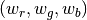
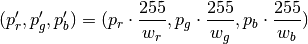
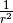
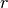
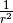
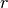

agh-mirosot-vision¶
Dokumentacja interfejsu¶
Ze względu na wymagania dotyczące wydajności i konieczność współpracy z maksymalnie różnorodnymi środowiskami algorytm rozpoznawania robotów został zaimplementowany jako program w języku C++ z interfejsem w C. Taka konfiguracja zapewnia maksymalną kompatybilność z dowolnym językiem programowania.
Cała istota algorytmu jest zawarta w jednej funkcji:
- robot_data find_teams(mirosot_vision_config* config)¶
Przyjmuje ona dane wizualne i tworzy opis drużyn robotów.
- struct mirosot_vision_config¶
struct mirosot_vision_config { unsigned char* image; int height, width; image_pos* white_points; int white_points_len; double px_per_cm; double robot_size; int meanshift_radius; int meanshift_threshold; unsigned char *debug_balance; unsigned char *debug_prescreen; unsigned char *debug_meanshift; unsigned char *debug_patches; unsigned char *debug_robots; void* state; };
Strukturę należy zainicjalizować funkcją init_config, która wypełnia pola wartościami domyślnymi i przygotowuje zawartość tablic pomocniczych ukrytych w polu state.
Poniżej opisane są poszczególne elementy struktury.
bitmapa¶
Struktura wejściowa zawiera wskaźnik do obrazka, z którego ma zostać wyciągnięta informacja o robotach. Dane koloru pikseli bitmapy są zapisane jako 3 bajty w formacie BGR, czyli dla wskaźnika unsigned char* ptr:
B = ptr[0];
G = ptr[1];
R = ptr[2];
Wartości pikseli obrazka na współrzędnych x i y są określone wzorem img(x, y) = img_ptr[3*(x + y*width)], czyli piksele są upakowane ciasno w przestrzeni adresowej i są przechowywane wierszami.
Alokacją obrazka zajmuje się użytkownik. Zawartość bitmapy zostaje zamazana po wywołaniu find_teams
inicjalizacja¶
Pola, które w normalnym działaniu algortymu zostają ustawiane tylko raz:
- double mirosot_vision_config.px_per_cm¶
- double mirosot_vision_config.robot_size¶
Podają odpowiednio rozdzielczość obrazu na powierzchni boiska (w pikselach na centymetr) i długość boku robota w centymetrach.
- image_pos *mirosot_vision_config.white_points¶
Pozycje punktów boiska, które można określić jako białe.
- int mirosot_vision_config.meanshift_radius¶
- int mirosot_vision_config.meanshift_threshold¶
Rozmiar okna algorytmu meanshift i odległość obcięcia koloru. Rozmiar okna może mieć duży wpływ na wydajność.
- unsigned char *debug_balance.debug_balance¶
- unsigned char *debug_balance.debug_prescreen¶
- unsigned char *debug_balance.debug_meanshift¶
- unsigned char *debug_balance.debug_patches¶
- unsigned char *debug_balance.debug_robots¶
Jeśli któreś z tych pól zostanie ustawione na bufor zaalokowany przez użytkownika, zostanie on wypełniony kopią obrazka z pola image z domalowanymi elementami mogącymi wspomóc diagnozowanie problemów z algorytmem.
Opis algorytmu¶
1. Linearyzacja¶
Najbardziej popularny sposób kodowania kolorów w kamerach i innych urządzeniach przetwarzania obrazu to nieliniowo kodowana przestrzeń sRGB. Aby powiązać wartość liczbową piksela z fizyczną energią światła, wartość piksela należy zlinearyzować.
2. Regulacja balansu bieli.¶
Wiedząc, że pomalowany na biało przedmiot posiada kolor ,
bardzo łatwo przekolorować bitmapę, by biały wyglądał na biały. Wystarczy
dla każdego piksela  zastosować prostą transformację:
zastosować prostą transformację:

Jeśli  , czyli punkt bieli jest znany i taki sam, na tym można zakończyć
balans. Co jednak, jeśli punkt bieli jest różny w różnych punktach obrazu?
Wtedy w każdym punkcie obrazu (tak naprawdę na każdym małym kafelku obrazu)
wyznaczamy punkt bieli jako średnią ważoną wagą ,
gdzie  to odległość punktu z bielą do badanego punktu.
, czyli punkt bieli jest znany i taki sam, na tym można zakończyć
balans. Co jednak, jeśli punkt bieli jest różny w różnych punktach obrazu?
Wtedy w każdym punkcie obrazu (tak naprawdę na każdym małym kafelku obrazu)
wyznaczamy punkt bieli jako średnią ważoną wagą ,
gdzie  to odległość punktu z bielą do badanego punktu.
3. Transformacja do HSV¶
Obok obrazka w formacie RGB tworzony jest jego odpowiednik HSV.
4. Wstępne zaznaczanie kandydatów¶
Piksele, które wpadają w odpowiedni przedział barwy (H) i nasycenia (S) są oznaczane jako kandydaci do dalszego przetwarzania w zbiorach pikseli żółtych i niebieskich.
5. Meanshift¶
Algorytm segmentacji meanshift posiada wstępną fazę filtrowania, która wygładza jednolite obszary, tak że po filtrowaniu stanowią jeden jednolity kolor. Istotę tego filtrowania można stosować do każdego piksela z osobna. Dzięki temu, że po filtrowaniu jednokolorowe obszary są bardzo jednolite, można je wyodrębnić za pomocą zwykłego algorytmu flood-fill.
6. Obszary¶
Następnie obszary są segregowane na podstawie ich rozmiaru. Za duże lub za małe obszary są odrzucane.
7. Regresja¶
Na wyodrębnionych obszarach wyznaczana jest linia minimalizująca sumę kwadratów odległości pikseli od linii (regresja Deminga). Za jej pomocą wyznaczamy kąt obrotu robota.